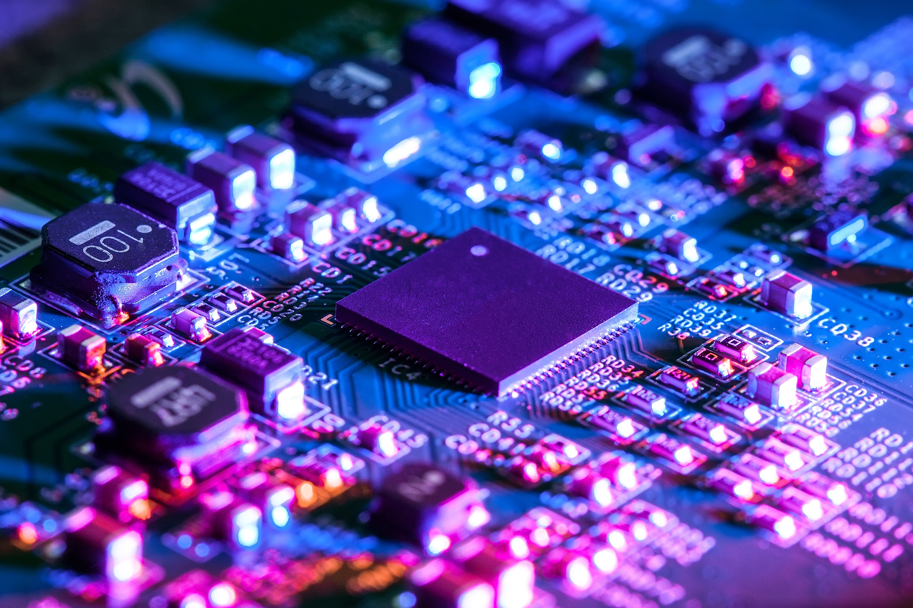

Copy Right By Rizqi Achmad Rivaldi

Rekayasa Perangkat Lunak
Teknik Informatika RPL adalah jurusan yang mendalami cara-cara pengembangan perangkat lunak (software), meliputi pembuatan, pemeliharaan, manajemen, organisasi, dan pengembangannya. Pada kelas ini, siswa akan mendalami kegiatan-kegiatan yang berhubungan dengan rekayasa perangkat lunak, baik untuk komputer maupun gadget.
Selengkapnya →
Copy Right By Rizqi Achmad Rivaldi

Teknik Komputer & Jaringan
Teknik Informatika TKJ adalah jurusan yang mendalami cara-cara merakit komputer dan instalasi jaringan komputer.
Selengkapnya →
Copy Right By Rizqi Achmad Rivaldi
Teknik Jaringan Akses
Teknik Telekomunikasi TJA adalah jurusan yang berkompetensi di bidang jaringan, baik itu jaringan akses kabel (tembaga, coaxial dan fiber optic), maupun nirkabel.
Selengkapnya →